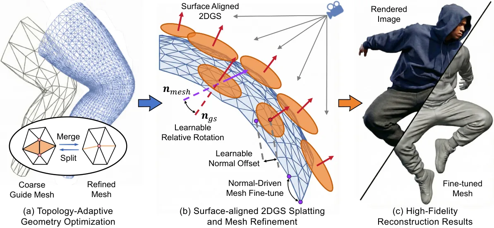
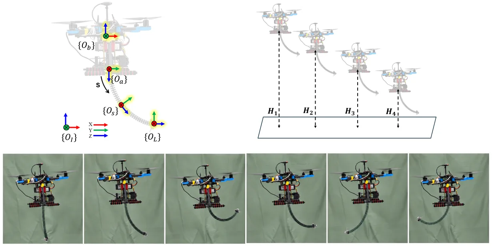
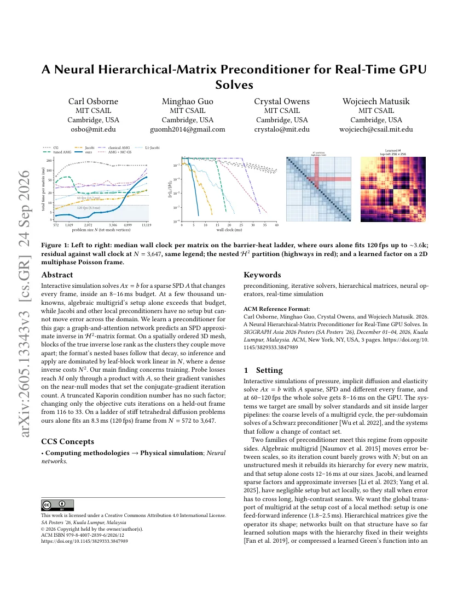
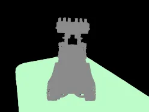
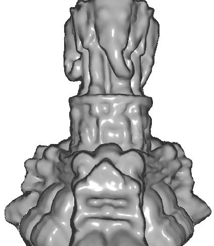

新论文 · 日期 2026-09-25 · score 15 · S层 · 3D/4D Spatial Perception · cs.GR, cs.CV
内容级别：完整单篇海报
作者：Chuanjin Fan, Wenjie Chang, Aibing Li, Bingzhou Wang, Wenfei Yang, Tianzhu Zhang
评分 15/10
动态网格重建拓扑一致性误差驱动自适应细分面吸附 2DGS模板-引导网格绑定
一句话工作总结：把拓扑自由度收进规范空间的单一模板，让自适应细分不再破坏帧间顶点对应，再用面吸附 2DGS 的法向监督反向细化几何。
从多视角时序图像重建拓扑一致的动态网格长期存在两难：逐帧提取方法（Marching Cubes / TSDF）细节好但破坏顶点对应、导致网格闪烁；模板变形方法（如 MaGS）拓扑稳定却把分辨率固定死，无法适应演化中的细节。论文提出 ToCo-Mesh：用双网格表示把规范空间的模板网格通过重心坐标 + 法向偏移紧绑到逐帧的粗引导网格上，在模板上做误差驱动的顶点分裂与合并并传播到所有时刻，从而在加密分辨率的同时严格保持…
Reconstructing dynamic meshes with consistent topology from multi-view temporal images remains a challenge. Existing approaches typically face a dilemma between fine-scale shape recovery and topological stabil…

新论文 · 日期 2026-09-25 · score 13 · A层 · Robust State Estimation / Uncertainty · cs.RO
内容级别：半海报
作者：Morgan Masters, Nikolaas Bender, T. Luca Altaffer, Colleen Josephson, Steve McGuire
评分 13/10
现场地理标注位姿-像素不确定度传播传感器噪声预算RTK 直接地理参考预注册留出评测
一句话工作总结：把标注的坐标系统反过来：人在地面记录世界坐标、投影几何负责把它映射回每一帧，并用同一条线性化关系的逆解回答“要多准的位姿才能满足标注容差”。
真实世界的感知系统必须适应变化的环境，但人工图像标注无法随野外数据量扩展。论文提出 BirdsEye，把专家标注从图像搬到现场：操作员用 RTK 记录目标的世界坐标，标定的投影几何再把该观测传播到目标可见的所有帧。为量化物理标注与图像观测的对齐程度，作者推导了相机位姿不确定度到像素不确定度的一阶映射，并用 Monte Carlo 仿真验证。由于该映射对六个逐轴位姿方差是线性的，它可以反解成一个传感器设计工具：把标注…
Real-world perception systems must adapt to changing environments, but manual image annotation cannot scale to field data volumes. We present BirdsEye, which shifts expert annotation from images to the field:…

新论文 · 日期 2026-09-25 · score 12 · A层 · Robust State Estimation / Uncertainty · cs.RO, cs.AI, cs.LG
内容级别：半海报
作者：Niloufar Amiri, Houman Masnavi, Farrokh Janabi-Sharifi
评分 12/10
空中连续体机械臂气动残差估计应变参数化运动学闭式连续时间网络 CfC输入消融与种子稳健性
一句话工作总结：把末端位置拆成“低阶应变参数化模型给出的标称量”与“气动扰动引起的残差”，后者交给连续时间网络，三模型对照显示 CfC 在未见实验上把 3D RMSE 从 44.94 mm 降到 22.00 mm。
论文研究无人机气动效应下空中连续体机械臂（ACM）的末端位置估计。作者采集了静止（旋翼关闭）与自由悬停两种条件下的实验数据集，覆盖不同连续体机器人构型与无人机高度，因而同时提供有/无气动残差的末端位置量测。为建立标称框架，论文比较了应变基阶数递增的应变参数化运动学模型，以在模型复杂度与预测精度之间取得平衡；选定的标称模型随后作为基线，用于用闭式连续时间（CfC）神经网络估计三维位置残差，并以多层感知机（MLP）与门…
This paper investigates temporal neural networks for \mbox{end-effector} position \mbox{estimation} of an aerial continuum manipulator (ACM) operating under aerodynamic effects induced by the unmanned aerial v…

新论文 · 日期 2026-09-25 · score 10 · A-层 · Real-time / GPU Robotics Systems · cs.GR, cs.DC, cs.LG, cs.NA
内容级别：简报式摘要
作者：Carl Osborne, Minghao Guo, Crystal Owens, Wojciech Matusik
评分 10/10
学习型预条件子H² 层次矩阵共轭梯度Kaporin 条件数实时 GPU 求解
一句话工作总结：用图-注意力网络预测 H² 格式的 SPD 近似逆，把预条件子的构造从 AMG 的 setup 瓶颈改成线性开销的推理，并用截断 Kaporin 条件数解决近零模梯度消失。
交互式仿真需要在 8–16 ms 预算内每帧求解稀疏 SPD 系统的 Ax=b，且 A 每帧变化。当未知量达到几千时，代数多重网格（AMG）的 setup 时间本身就会超预算，而 Jacobi 等局部预条件子没有 setup 成本却无法把误差跨域传递。论文为此学习一个预条件子：用图-注意力网络预测 H² 矩阵格式的 SPD 近似逆。在空间有序的三维网格上，真实逆矩阵的块会随其耦合的簇彼此远离而掉秩，而该格式的嵌套基…
Interactive simulation solves Ax=b for a sparse SPD A that changes every frame, inside an 8-16 ms budget. At a few thousand unknowns, the setup of algebraic multigrid alone exceeds that budget, while Jacobi an…

新论文 · 日期 2026-09-25 · score 11 · B层 · Neural Rendering / 3DGS / NeRF · cs.CV
内容级别：简报式摘要
作者：Sungjae Choi, Seunghee Koh, Junmo Kim
评分 11/10
3D 高斯泼溅分割多尺度分割单目深度先验对比学习掩膜不完整监督
一句话工作总结：把感知先验（单目深度、掩膜、深度-颜色对比线索）同时注入 3DGS 的几何重建与多尺度分割特征学习，用几何-语义互相约束弥补 2D 基础模型掩膜的不完整。
3D 高斯泼溅已支持多尺度分割，但现有方法通常先用高斯原语重建场景、再单独学习多尺度分割特征，结果几何对语义结构一无所知，而特征学习又依赖不完整的多尺度掩膜监督。论文提出 PePESeg3D：把感知先验同时注入多尺度 3D 高斯分割管线——PePE Reconstruction 引入单目深度与掩膜约束以保证语义连贯的物体结构，PePE Contrastive Learning 在已对齐的几何上利用稠密深度-颜色线索…
Recent advancements in 3D Gaussian Splatting (3DGS) have extended its capabilities to multi-scale segmentation. Existing methods reconstruct a scene with Gaussian primitives and learn multi-scale segmentation…

新论文 · 日期 2026-09-25 · score 9 · B层 · Neural Rendering / 3DGS / NeRF · cs.CV, cs.GR, cs.LG
内容级别：简报式摘要
作者：Vin\'icius da Silva, Isabelle Melo, Matheus Bessa, Guilherme Schardong, Luiz Schirmer, Andr\'e Ara\'ujo, Nuno Gon\c{c}alves, H\'elio Lopes, Alberto Raposo, Luiz Velho, Tiago Novello
评分 9/10
隐式神经表示嵌套多尺度残差零水平集窄带监督抗噪几何重建解析法向渲染
一句话工作总结：把曲面写成嵌套邻域上 MLP 的残差和、监督限制在前层零水平集窄带内，粗层作低通滤波抗噪，并用解析法向绕开自动微分实现实时渲染。
把输入坐标用正弦函数编码进 MLP 已被证明适合以零水平集定义曲面的隐式神经表示（INR），但现有方法难以同时兼顾训练效率、渲染速度与抗噪能力：单 MLP 推理代价高，栅格表示虽快却限制表面平滑性并容易过拟合输入噪声，而此前的多尺度方法常因硬性频谱截断而捕获噪声、产生伪影。论文提出 M-plicits：把曲面建模为一系列嵌套邻域上训练出的 MLP 残差和，与依赖全域采样、且需要昂贵网格提取才能可视化的既有残差方法不…
Encoding input coordinates with sinusoidal functions into multi-layer perceptrons (MLPs) has proven effective for implicit neural representations (INRs) of surfaces defined as zero-level sets. However, existin…
新论文 · 日期 2026-09-25 · score 7 · C层 · 纯 GNSS/INS / PPP-AR · eess.SP
内容级别：简报式摘要
作者：Francesco Menzione, Alejandro Gonzalez-Garrido, Flavien Ronteix-Jacquet, Ottavio M. Picchi
评分 6/10
GNSS 拒止5G NTN 随机接入单星定位AoA/FoA/ToA 混合Levenberg-Marquardt 滤波
一句话工作总结：在 GNSS 拒止时用单颗卫星的 AoA/FoA/ToA 观测量做多历元混合定位，把初始位置不确定度从数十公里降到数公里以保住 5G NTN 的随机接入。
3GPP 的 5G 非地面网络（NTN）在机制上依赖用户设备（UE）先获得 GNSS 定位，以便在包括初始接入随机接入过程在内的任何发送之前预补偿用户链路时延与多普勒；在 GNSS 拒止或受干扰环境中，这种依赖会引发前导碰撞与连接中断，削弱卫星全球连接能力。针对该脆弱性，论文提出面向高频段（Ku/Ka）5G NTN 甚小口径终端（VSAT，配相控阵天线）的单星定位框架：先用到达角（AoA）观测量得到粗位置，再从低轨…
The 3GPP 5G non-terrestrial networks (NTN) technology fundamentally relies on a global navigation satellite system (GNSS) fix at the user equipment (UE) to pre-compensate for user-link delay and Doppler shifts…